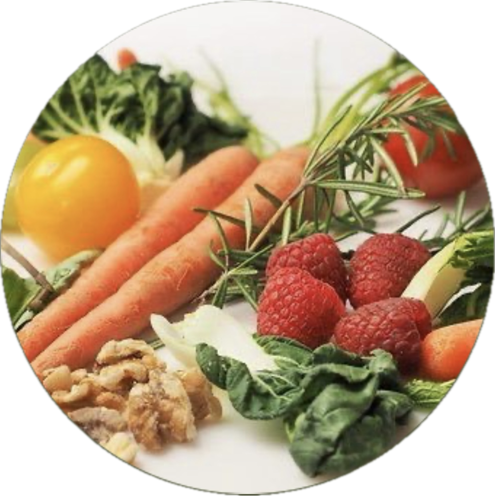
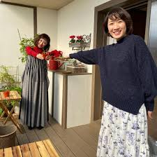
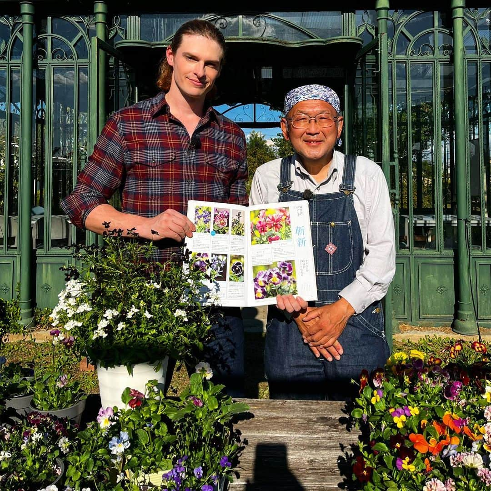
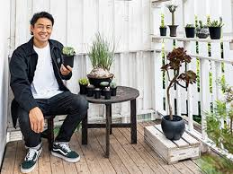
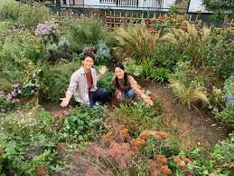

たんこぶ菜園の紹介

たんこぶ菜園
野菜作りの経験は10年以上。
楽しく育てることに幸せを感じ、多くの人と植物を育てる喜びを共有したいと、各種SNSを展開。
育て方に固執せず、自由でオリジナリティ溢れる菜園に魂を感じる。
IT×植物のように、新しい園芸界の流行を作り出すことを望む。
#家庭菜園 #園芸 #園芸男子 #植物 #ガーデニング #プランター #畑 #野菜 #鉢花 #切花 #多肉植物 #観葉植物 #水耕栽培 #フラワーアレンジメント #ドライフラワー #IT #IoT #AI #スマート農業 #植物工場 #Python #chatGPT #生成AI #コミュニティ #メディア
過去に出会った園芸家の方々

深町貴子先生
園芸家 野菜、観葉植物

金子明人先生
園芸家 鉢花

鶴岡秀明先生
園芸家 多肉植物

平工詠子先生
園芸家 多年草